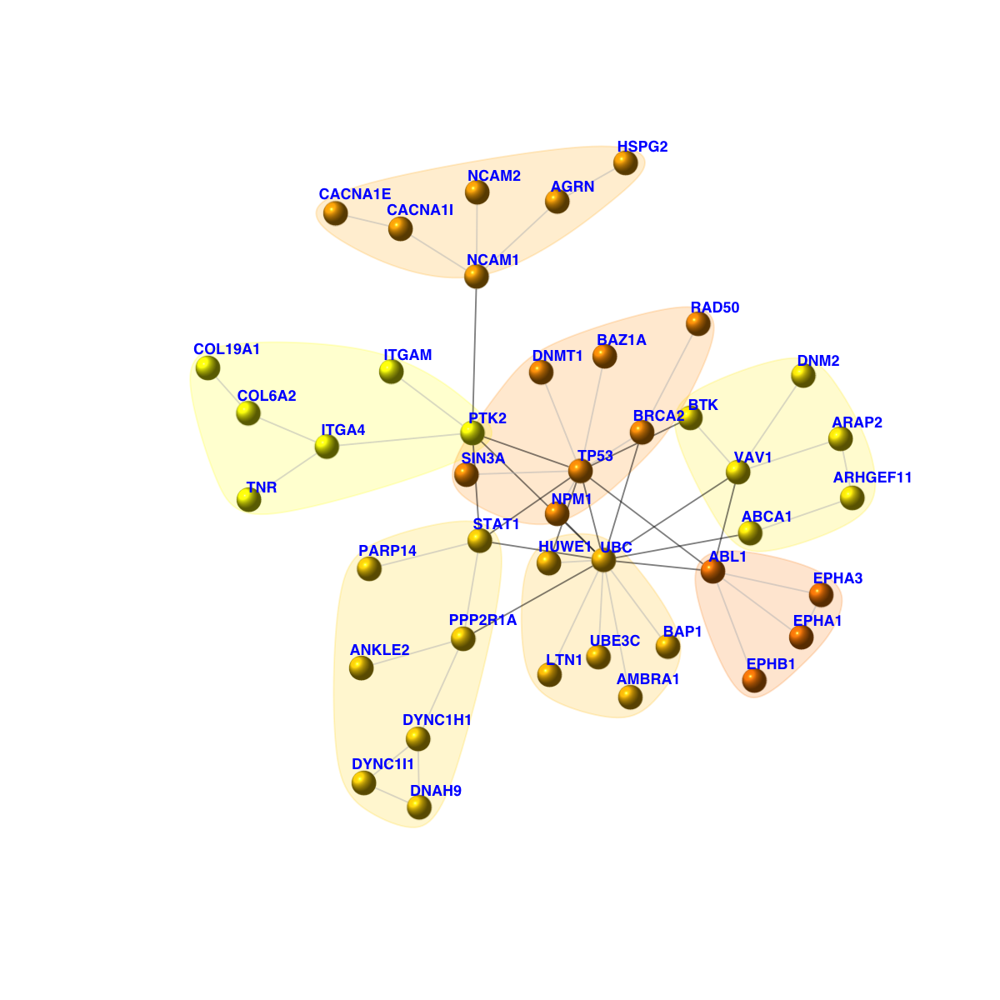
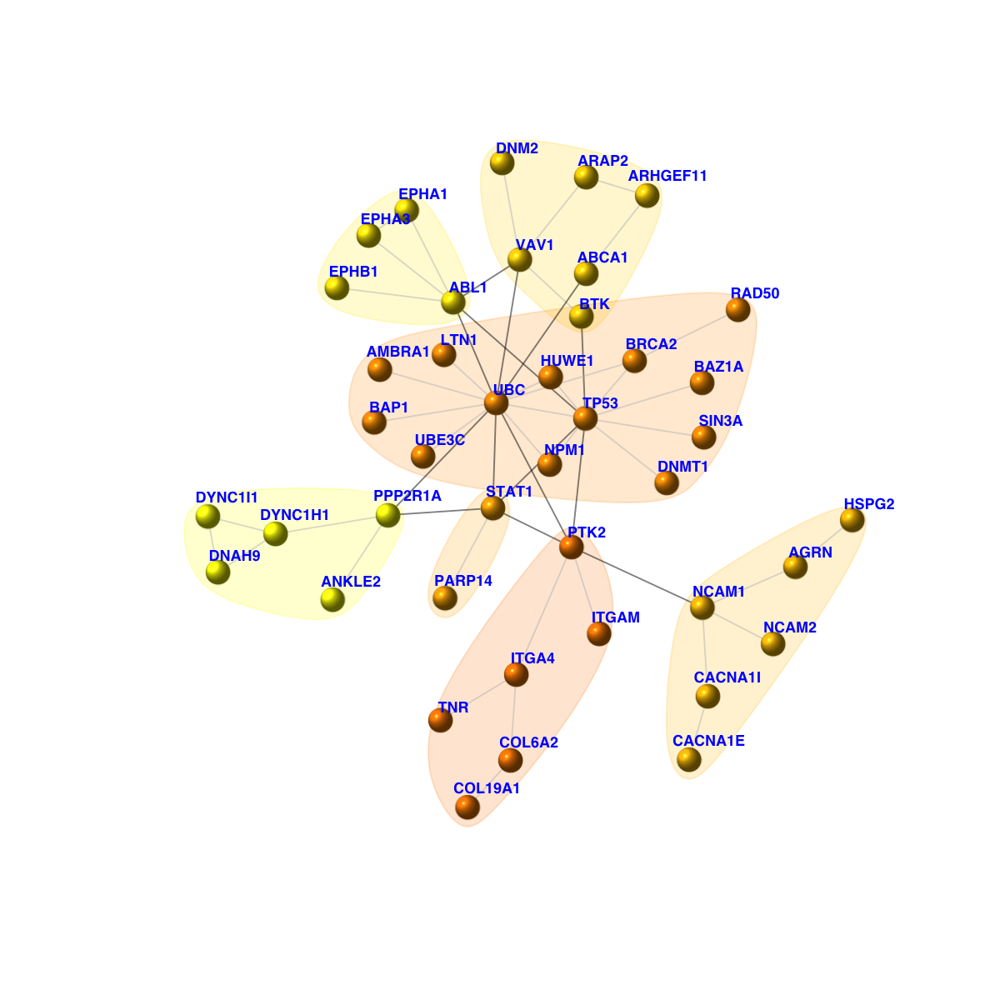
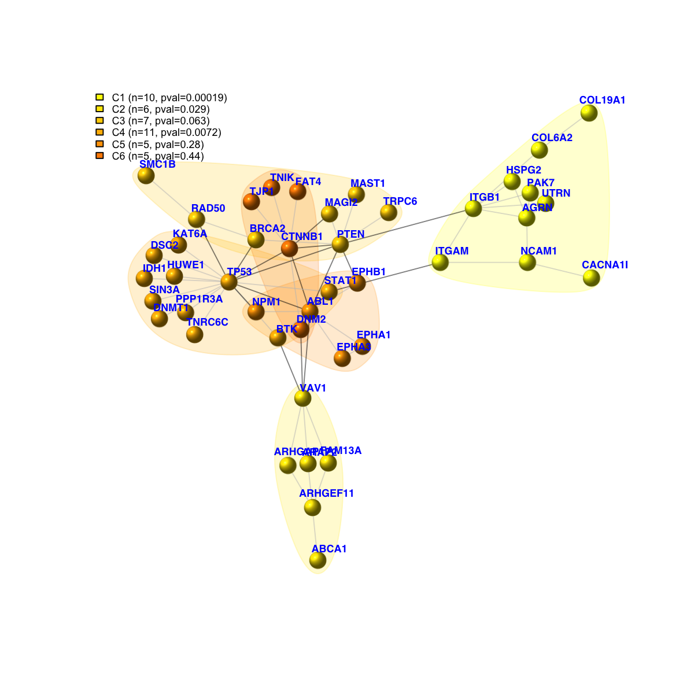
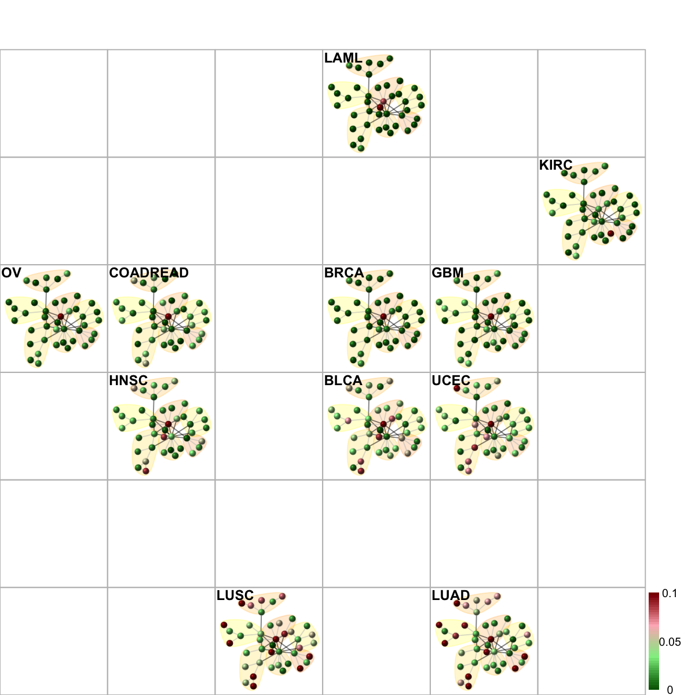
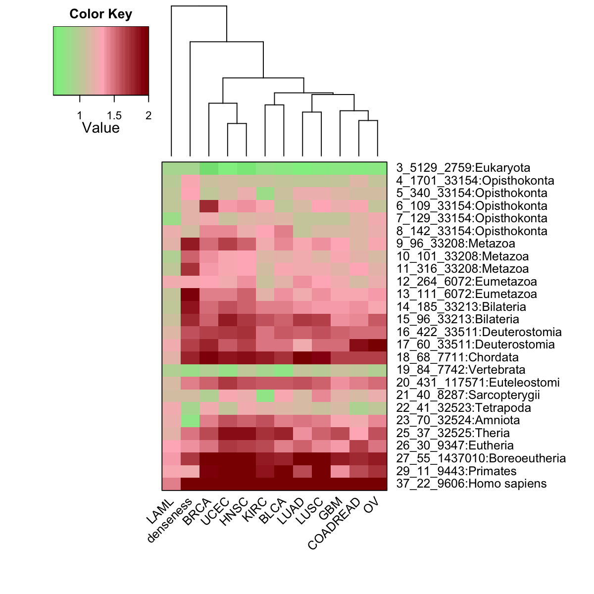
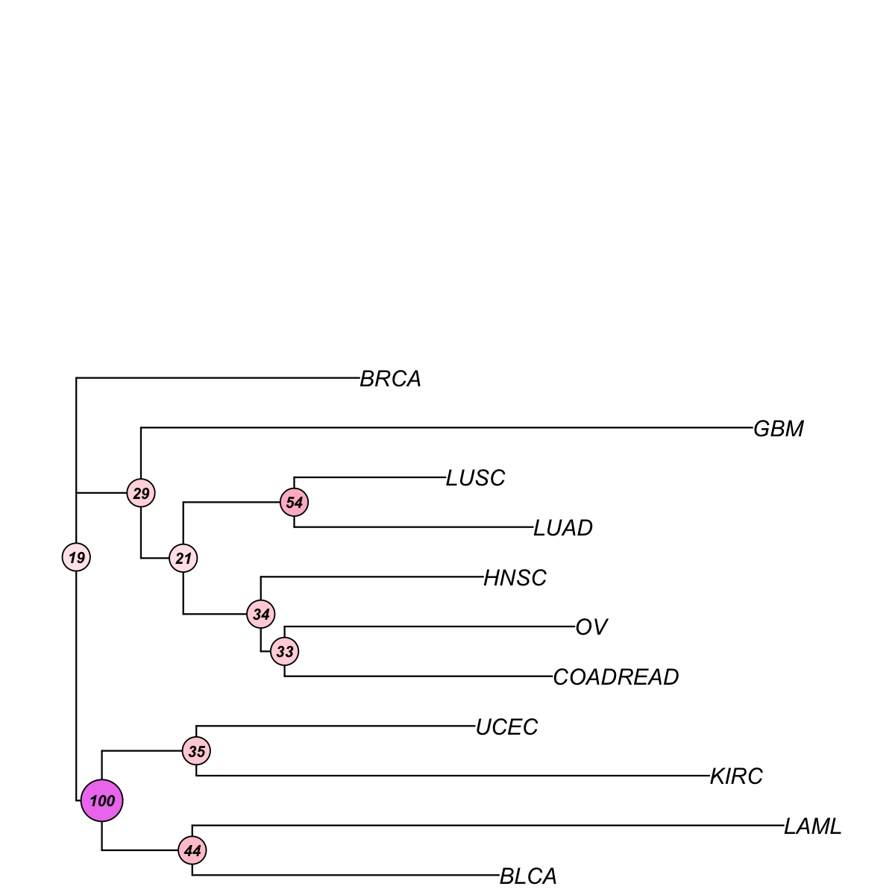
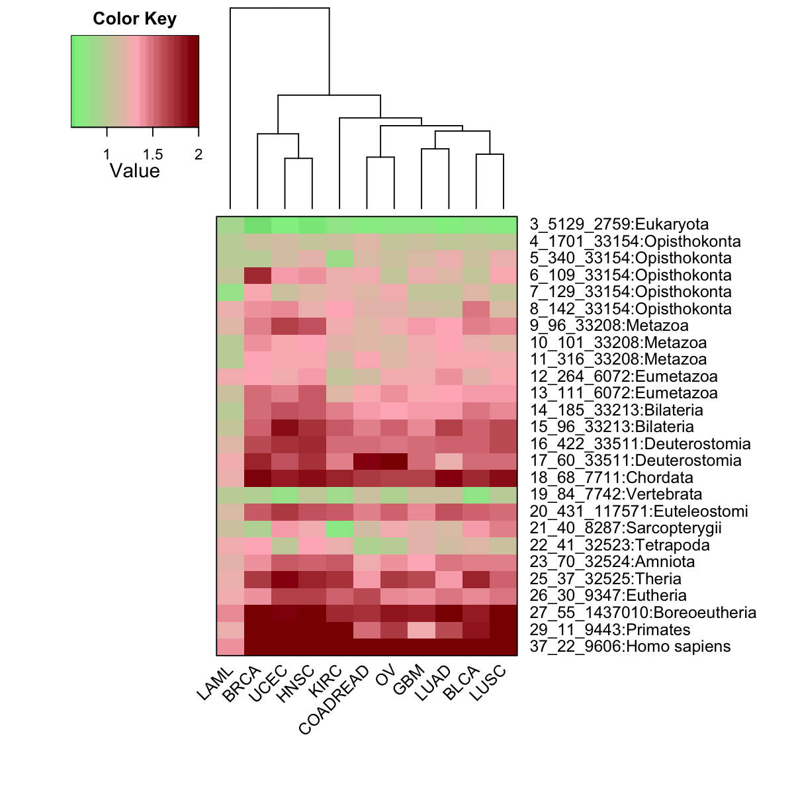
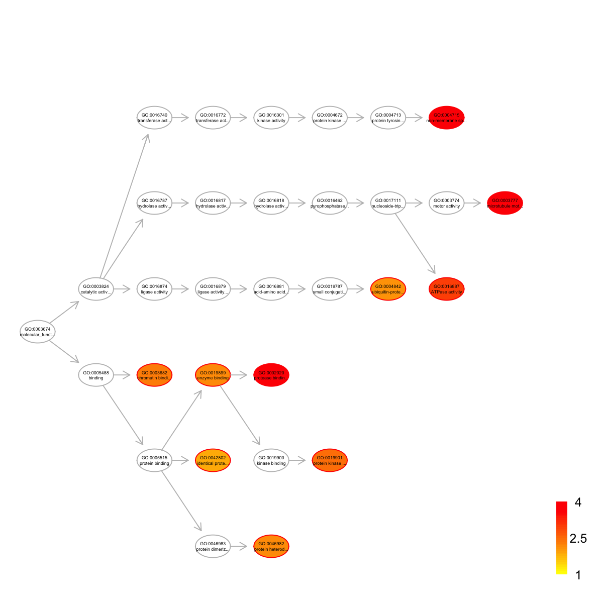
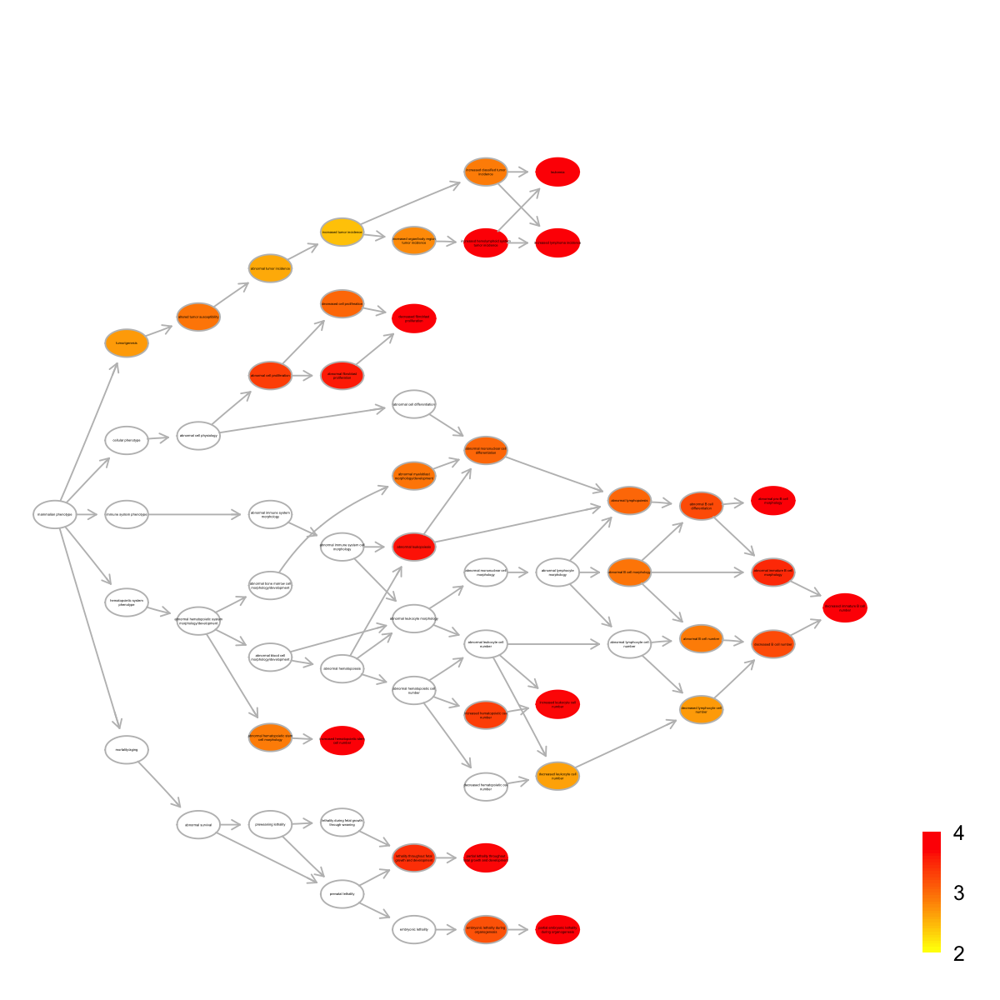
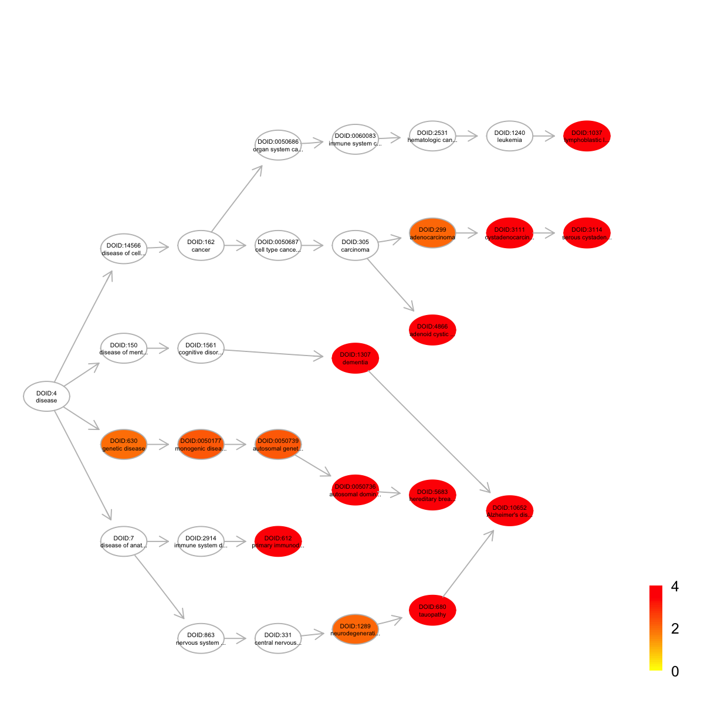

time status Age Gender TCGA_tumor_type Tumor_stage
TCGA-B8-4153-01B-11D-1669-08 404 0 74 male KIRC 3
TCGA-24-1469-01A-01W-0553-09 277 0 71 female OV 3
TCGA-06-5411-01A-01D-1696-08 254 1 51 male GBM NA
Tumor_grade
TCGA-B8-4153-01B-11D-1669-08 3
TCGA-24-1469-01A-01W-0553-09 3
TCGA-06-5411-01A-01D-1696-08 NA
# extract information about feature/gene data
fd <- fData(eset)
fd[1:3,]
EntrezID Symbol Desc
A1BG 1 A1BG alpha-1-B glycoprotein
A1CF 29974 A1CF APOBEC1 complementation factor
A2M 2 A2M alpha-2-macroglobulin
Synonyms
A1BG A1B|ABG|GAB|HYST2477
A1CF ACF|ACF64|ACF65|APOBEC1CF|ASP
A2M A2MD|CPAMD5|FWP007|S863-7
# extract information about mutational data
md <- exprs(eset)
md[1:3,1:3]
TCGA-B8-4153-01B-11D-1669-08 TCGA-24-1469-01A-01W-0553-09
A1BG 0 0
A1CF 0 0
A2M 0 0
TCGA-06-5411-01A-01D-1696-08
A1BG 1
A1CF 0
A2M 0
# number of samples for each cancer type
tumor_type <- sort(unique(pData(eset)$TCGA_tumor_type))
table(pData(eset)$TCGA_tumor_type)
BLCA BRCA COADREAD GBM HNSC KIRC LAML LUAD
92 763 193 275 300 417 185 155
LUSC OV UCEC
171 315 230
'org.Hs.string' (from http://supfam.org/dnet/data/Hs/org.Hs.string.RData) has been loaded into the working environment
# restrict to those edges with high confidence (score>=700)
network <- subgraph.edges(org.Hs.string, eids=E(org.Hs.string)[combined_score>=700])
network
IGRAPH UN-- 13026 198516 --
+ attr: name (v/c), seqid (v/c), geneid (v/n), symbol (v/c),
description (v/c), neighborhood_score (e/n), fusion_score (e/n),
cooccurence_score (e/n), coexpression_score (e/n), experimental_score
(e/n), database_score (e/n), textmining_score (e/n), combined_score
(e/n)
IGRAPH UN-- 1601 9283 --
+ attr: name (v/c), seqid (v/c), geneid (v/n), symbol (v/c),
description (v/c), neighborhood_score (e/n), fusion_score (e/n),
cooccurence_score (e/n), coexpression_score (e/n), experimental_score
(e/n), database_score (e/n), textmining_score (e/n), combined_score
(e/n)
Start at 2014-09-09 17:29:05
First, consider the input fdr (or p-value) distribution
Second, determine the significance threshold...
significance threshold: 3.00e-02
Third, calculate the scores according to the input fdr (or p-value) and the threshold (if any)...
Amongst 2837 scores, there are 175 positives.
Finally, find the subgraph from the input graph with 1601 nodes and 9283 edges...
Size of the subgraph: 42 nodes and 54 edges
Finish at 2014-09-09 17:29:08
Runtime in total is: 3 secs
net
IGRAPH UN-- 42 54 --
+ attr: name (v/c), seqid (v/c), geneid (v/n), symbol (v/c),
description (v/c), score (v/n), neighborhood_score (e/n),
fusion_score (e/n), cooccurence_score (e/n), coexpression_score
(e/n), experimental_score (e/n), database_score (e/n),
textmining_score (e/n), combined_score (e/n)

legend_name <- paste("C",1:length(mcolors)," (n=",com$csize,", pval=",signif(com$significance,digits=2),")",sep='')
legend("topleft", legend=legend_name, fill=mcolors, bty="n", cex=0.6)

# fit a Cox proportional hazards model using the subnetwork
## for the whole network
data_g <- t(md[V(net)$name,])
data_g <- apply(data_g!=0, 1, sum)
data <- cbind(pd, net=data_g)
fit <- coxph(formula=Surv(time,status) ~ Age + Gender + TCGA_tumor_type + net, data=data)
res <- as.matrix(anova(fit))
HR_g <- res[5,2]
pvals_g <- res[5,4]
## for the cumulative nodes from the network
cg_names <- names(sort(HR[V(net)$name], decreasing=T))
cg_signif <- matrix(1, nrow=length(cg_names), ncol=2)
rownames(cg_signif) <- cg_names
colnames(cg_signif) <- c("HR", "pvalue")
for(i in 1:length(cg_names)){
data_g <- t(md[cg_names[1:i],])
if(i!=1){
data_g <- apply(data_g!=0, 1, sum)
}else{
data_g <- as.vector(data_g!=0)
}
data <- cbind(pd, cnet=data_g)
fit <- coxph(formula=Surv(time,status) ~ Age + Gender + TCGA_tumor_type + cnet, data=data)
res <- as.matrix(anova(fit))
cg_signif[i,] <- res[5,c(2,4)]
}
cg_signif[cg_signif[,2]==0,2] <- min(cg_signif[cg_signif[,2]!=0,2])
naive <- sample(HR, length(cg_names))
bp.HR.list <- list(All=naive, Neti=HR[cg_names], Netc=cg_signif[2:nrow(cg_signif),1])
par(las=2, mar=c(10,8,4,2)) # all axis labels horizontal
boxplot(bp.HR.list, outline=F, horizontal=F, names=c("naive\n(genes in random)", "dnet\n(genes individually)", "dnet \n(genes in combination)"), col=c("red","green","blue"), ylab="Cox hazard ratio (HR)", log="y", ylim=c(0.1,100))

# Two-sample Kolmogorov-Smirnov test
## Genes randomly choosen versus genes in the network (used individually)
stats::ks.test(x=naive, y=HR[cg_names], alternative="two.sided", exact=NULL)
Two-sample Kolmogorov-Smirnov test
data: naive and HR[cg_names]
D = 0.9048, p-value < 2.2e-16
alternative hypothesis: two-sided
## Genes in the network (used individually) versuse genes in the network (used in combination)
stats::ks.test(x=HR[cg_names], y=cg_signif[2:nrow(cg_signif),1], alternative="two.sided", exact=NULL)
Two-sample Kolmogorov-Smirnov test
data: HR[cg_names] and cg_signif[2:nrow(cg_signif), 1]
D = 1, p-value < 2.2e-16
alternative hypothesis: two-sided
Start at 2014-09-09 17:29:18
First, define topology of a map grid...
Second, initialise the codebook matrix given a topology and input data...
Third, get training at the rough stage...
Fourth, get training at the finetune stage...
Next, identify the best-matching hexagon/rectangle for the input data...
Finally, append the response data (hits and mqe) into the sMap object...
Below are the summaries of the training results:
dimension of input data: 11x54
xy-dimension of map grid: xdim=6, ydim=6
grid lattice: rect
grid shape: sheet
dimension of grid coord: 36x2
initialisation method: linear
dimension of codebook matrix: 36x54
mean quantization error: 0.0028412561272337
Below are the details of trainology:
training algorithm: sequential
alpha type: invert
training neighborhood kernel: gaussian
trainlength (x input data length): 33 at rough stage; 131 at finetune stage
radius (at rough stage): from 1 to 1
radius (at finetune stage): from 1 to 1
End at 2014-09-09 17:29:19
Runtime in total is: 1 secs

# output the subnetwork and their mutation frequency data
## Write the subnetwork into a SIF-formatted file (Simple Interaction File)
sif <- data.frame(source=get.edgelist(net)[,1], type="interaction", target=get.edgelist(net)[,2])
write.table(sif, file=paste("Survival_TCGA.sif", sep=""), quote=F, row.names=F,col.names=F,sep="\t")
## Output the corresponding mutation frequency data
hmap <- data.frame(Symbol=rownames(data), data)
write.table(hmap, file=paste("Survival_TCGA.txt", sep=""), quote=F, row.names=F,col.names=T,sep="\t")
# define the "mutation ubiquity" of genes in terms of a vector which stores the fraction of samples (within a tumor type) having the mutated gene
# sparseness for a vector is: 1) one if the vector contains only a single non-zero value; 2) zero if and only if all elements are equal; 3) otherwise, the value interpolates smoothly between the two extremes
sparseness <- sapply(1:nrow(frac_mutated), function(i){
v <- frac_mutated[i,]
n <- length(v)
norm1 <- sum(abs(v))
norm2 <- sqrt(sum(v^2))
(sqrt(n)-norm1/norm2) / (sqrt(n)-1)
})
sparseness <- matrix(sparseness, ncol=1)
rownames(sparseness) <- rownames(frac_mutated)
# derive the "mutation ubiquity" of genes: mutational fraction with the same type, and fraction consistent across different types
ubiquity <- 1- sparseness
dev.new()
hist(ubiquity,20, xlab="Cross-tumor mutation ubiquity", xlim=c(0,1))
Start at 2014-09-09 17:29:52
First, load the ontology Customised and its gene associations in the genome Hs (2014-09-09 17:29:52) ...
Load Enterz Gene information from http://supfam.org/dnet/data/Hs/org.Hs.eg.RData
Among 42 symbols of input data, there are 42 mappable via official gene symbols but 0 left unmappable
Then, do mapping based on symbol (2014-09-09 17:29:53) ...
Among 19171 symbols of input data, there are 19171 mappable via official gene symbols but 0 left unmappable
Third, perform GSEA analysis (2014-09-09 17:29:55) ...
Sample 1 is being processed at (2014-09-09 17:29:55) ...
1 of 1 gene sets have been processed
Sample 2 is being processed at (2014-09-09 17:29:58) ...
1 of 1 gene sets have been processed
Sample 3 is being processed at (2014-09-09 17:30:00) ...
1 of 1 gene sets have been processed
Sample 4 is being processed at (2014-09-09 17:30:03) ...
1 of 1 gene sets have been processed
Sample 5 is being processed at (2014-09-09 17:30:05) ...
1 of 1 gene sets have been processed
Sample 6 is being processed at (2014-09-09 17:30:08) ...
1 of 1 gene sets have been processed
Sample 7 is being processed at (2014-09-09 17:30:10) ...
1 of 1 gene sets have been processed
Sample 8 is being processed at (2014-09-09 17:30:13) ...
1 of 1 gene sets have been processed
Sample 9 is being processed at (2014-09-09 17:30:15) ...
1 of 1 gene sets have been processed
Sample 10 is being processed at (2014-09-09 17:30:18) ...
1 of 1 gene sets have been processed
Sample 11 is being processed at (2014-09-09 17:30:20) ...
1 of 1 gene sets have been processed
Sample 12 is being processed at (2014-09-09 17:30:23) ...
1 of 1 gene sets have been processed
End at 2014-09-09 17:30:25
Runtime in total is: 33 secs
## Comparing normalised enrichement score (NES)
frac_pvalue <- as.vector(eTerm$pvalue)
frac_fdr <- stats::p.adjust(frac_pvalue, method="BH")
frac_nes <- as.vector(eTerm$nes)
frac_es <- as.vector(eTerm$es)
df <- cbind(frac_es, frac_nes, frac_pvalue, frac_fdr)
rownames(df) <- colnames(eTerm$es)
rownames(df)[nrow(df)] <- "Mutation\nubiquity"
ind <- sort.int(frac_es, index.return=T)$ix
data <- df[ind,]
par(las=1) # make label text perpendicular to axis
par(mar=c(5,8,4,2)) # increase y-axis margin.
z <- data[,2]
barY <- barplot(z, xlab="Normalised enrichment score (NES)", horiz=TRUE, names.arg=rownames(data), cex.names=0.7, cex.lab=0.7, cex.axis=0.7, col="transparent")

Start at 2014-09-09 17:30:27
First, load the ontology PS2 and its gene associations in the genome Hs (2014-09-09 17:30:27) ...
Load Enterz Gene information from http://supfam.org/dnet/data/Hs/org.Hs.eg.RData
Load annotation information from http://supfam.org/dnet/data/Hs/org.Hs.egPS.RData
Then, do mapping based on symbol (2014-09-09 17:30:27) ...
Among 42 symbols of input data, there are 42 mappable via official gene symbols but 0 left unmappable
Third, perform enrichment analysis using HypergeoTest (2014-09-09 17:30:27) ...
There are 19 terms being used, each restricted within [10,20000] annotations
Last, adjust the p-values using the BH method (2014-09-09 17:30:27) ...
End at 2014-09-09 17:30:27
Runtime in total is: 0 secs
setID nAnno nOverlap zscore pvalue adjp name namespace
3 3 7001 9 -3.770 1.00000 1.000 2759:Eukaryota superkingdom
8 8 3259 12 0.777 0.17000 0.290 33154:Opisthokonta no rank
11 11 612 6 3.120 0.00220 0.014 33208:Metazoa kingdom
13 13 477 1 -0.377 0.43000 0.480 6072:Eumetazoa no rank
15 15 405 0 -1.130 0.71000 0.750 33213:Bilateria no rank
17 17 674 7 3.560 0.00081 0.014 33511:Deuterostomia no rank
18 18 75 2 3.740 0.00150 0.014 7711:Chordata phylum
19 19 97 0 -0.545 0.26000 0.350 7742:Vertebrata no rank
20 20 559 2 0.241 0.24000 0.350 117571:Euteleostomi no rank
21 21 105 0 -0.567 0.27000 0.350 8287:Sarcopterygii no rank
22 22 122 0 -0.611 0.31000 0.370 32523:Tetrapoda no rank
23 23 203 2 1.780 0.02300 0.089 32524:Amniota no rank
24 24 13 0 -0.199 0.03900 0.120 40674:Mammalia class
25 25 71 0 -0.466 0.19000 0.310 32525:Theria no rank
26 26 53 0 -0.402 0.15000 0.280 9347:Eutheria no rank
27 27 76 1 1.610 0.02200 0.089 1437010:Boreoeutheria no rank
30 30 22 0 -0.259 0.06500 0.150 9443:Primates order
36 36 15 0 -0.214 0.04400 0.120 207598:Homininae subfamily
37 37 30 0 -0.302 0.08700 0.180 9606:Homo sapiens species
distance
3 0
8 0.03880849
11 0.09260898
13 0.1117612
15 0.126603
17 0.1485278
18 0.1575984
19 0.1695313
20 0.1829545
21 0.1855467
22 0.188559
23 0.1924103
24 0.1955288
25 0.1991713
26 0.2026269
27 0.2040922
30 0.2070882
36 0.223133
37 0.2334046
members
3 ABCA1,COL19A1,DYNC1I1,DNMT1,PPP2R1A,BAP1,UBE3C,SIN3A,AMBRA1
8 BRCA2,CACNA1E,DNAH9,DYNC1H1,DNM2,NPM1,UBC,CACNA1I,LTN1,BAZ1A,RAD50,STAT1
11 ABL1,BTK,ANKLE2,ITGA4,NCAM1,NCAM2
13 PARP14
15
17 COL6A2,EPHA1,EPHA3,PTK2,VAV1,HUWE1,TP53
18 EPHB1,ITGAM
19
20 TNR,ARHGEF11
21
22
23 ARAP2,AGRN
24
25
26
27 HSPG2
30
36
37
'org.Hs.eg' (from http://supfam.org/dnet/data/Hs/org.Hs.eg.RData) has been loaded into the working environment
gene_info <- org.Hs.eg$gene_info
entrez <- unlist(eTerm$overlap[6], use.names=F)
## build neighbor-joining tree
data <- frac_mutated[V(net)$name,]
tree_bs <- visTreeBootstrap(t(data), nodelabels.arg=list(cex=0.7,bg="white-pink-violet"), metric=c("euclidean","pearson","spearman","cos","manhattan","kendall","mi")[3], num.bootstrap=2000, plot.phylo.arg=list(cex=1, edge.width=1.2))
Start at 2014-09-09 17:30:27
First, build the tree (using nj algorithm and spearman distance) from input matrix (11 by 42)...
Second, perform bootstrap analysis with 2000 replicates...
Finally, visualise the bootstrapped tree...
Finish at 2014-09-09 17:30:30
Runtime in total is: 3 secs

flag <- match(tree_bs$tip.label, colnames(data))
base <- sapply(eTerm$overlap, function(x){
as.character(gene_info[match(x,rownames(gene_info)),2])
})
## reordering via hierarchical clustering
if(1){
cluster_order <- matrix(1, nrow=length(base))
base_order <- matrix(1, nrow=length(base))
for(i in 1:length(base)){
tmp <- base[[i]]
ind <- match(tmp, rownames(data))
if(length(ind)>0){
base_order[ind] <- i
tmpD <- data[ind,]
if(length(tmp) != 1){
distance <- as.dist(sDistance(tmpD, metric="pearson"))
cluster <- hclust(distance, method="average")
cluster_order[ind] <- cluster$order
}else if(length(tmp) == 1){
cluster_order[ind] <- 1
}
}
}
## contruct data frame including 1st column for temporary index, 2nd for cluster order, 3rd for base/cluster ID
df <- data.frame(ind=1:nrow(data), cluster_order, base_order)
# order by: first base, then hexagon
ordering <- df[order(base_order,cluster_order),]$ind
}
RowSideColors <- sapply(1:length(base), function(x) base_order==x)
RowSideColors <- t(RowSideColors)
rslab <- ifelse(eTerm$adjp<0.05," (FDR<0.05)","")
rslab <- paste(gsub(".*:","",eTerm$set_info$name), rslab, sep="")
rownames(RowSideColors) <- rslab
colnames(RowSideColors) <- rownames(data)
RowSideColors <- ifelse(RowSideColors==T, "gray","white")
RowSideColors <- RowSideColors[, ordering]
base_order1 <- base_order[ordering]
basesep_index <- sapply(unique(base_order1), function(x) which(base_order1[length(base_order1):1]==x)[1])
basesep_index <- basesep_index[1:length(basesep_index)-1]
labRow <- sapply(pvals[match(V(net)$name, names(pvals))], function(x){
if(x < 0.005){
" ***"
}else if(x < 0.01){
" **"
}else if(x<0.05){
" *"
}else{
""
}
})
labRow <- paste(rownames(data), labRow, sep="")
visHeatmapAdv(data=data[ordering,flag], Rowv=F, Colv=F, colormap="lightyellow-orange", zlim=c(0,0.12), keysize=1.5, RowSideColors=RowSideColors, RowSideWidth=2, RowSideLabelLocation="top", add.expr=abline(h=(basesep_index-0.5), lty=2,lwd=1,col="black"), offsetRow=-0.5, labRow=labRow[ordering], KeyValueName="Frequency", margins=c(6,6))

## Deuterostomia versus all ancestors
stats::ks.test(x=net_ubiquity[base_order1==6], y=net_ubiquity, alternative="two.sided", exact=NULL)
Warning message:
cannot compute exact p-value with ties
Two-sample Kolmogorov-Smirnov test
data: net_ubiquity[base_order1 == 6] and net_ubiquity
D = 0.5476, p-value = 0.05472
alternative hypothesis: two-sided
## Deuterostomia versus ancestors before Deuterostomia
stats::ks.test(x=net_ubiquity[base_order1==6], y=net_ubiquity[base_order1<6], alternative="two.sided", exact=NULL)
Two-sample Kolmogorov-Smirnov test
data: net_ubiquity[base_order1 == 6] and net_ubiquity[base_order1 < 6]
D = 0.6786, p-value = 0.006488
alternative hypothesis: two-sided
## Deuterostomia versus ancestors after Deuterostomia
stats::ks.test(x=net_ubiquity[base_order1==6], y=net_ubiquity[base_order1>6], alternative="two.sided", exact=NULL)
Two-sample Kolmogorov-Smirnov test
data: net_ubiquity[base_order1 == 6] and net_ubiquity[base_order1 > 6]
D = 0.5714, p-value = 0.2121
alternative hypothesis: two-sided
Start at 2014-09-09 17:30:30
First, load the ontology GOBP and its gene associations in the genome Hs (2014-09-09 17:30:30) ...
Load Enterz Gene information from http://supfam.org/dnet/data/Hs/org.Hs.eg.RData
Load annotation information from http://supfam.org/dnet/data/Hs/org.Hs.egGOBP.RData
Then, do mapping based on symbol (2014-09-09 17:30:31) ...
Among 42 symbols of input data, there are 42 mappable via official gene symbols but 0 left unmappable
Third, perform enrichment analysis using HypergeoTest (2014-09-09 17:30:31) ...
There are 1955 terms being used, each restricted within [10,1000] annotations
Last, adjust the p-values using the BH method (2014-09-09 17:30:31) ...
End at 2014-09-09 17:30:32
Runtime in total is: 2 secs
'ig.GOBP' (from http://supfam.org/dnet/data/Obo/ig.GOBP.RData) has been loaded into the working environment
setID nAnno nOverlap zscore pvalue adjp
GO:0007411 GO:0007411 331 9 8.29 2.7e-08 6.1e-07
GO:0030198 GO:0030198 312 9 8.59 1.5e-08 6.1e-07
GO:0030010 GO:0030010 20 3 12.20 2.9e-07 4.5e-06
GO:0032319 GO:0032319 23 3 11.40 5.3e-07 6.1e-06
GO:0007569 GO:0007569 26 3 10.60 8.9e-07 8.1e-06
GO:0048013 GO:0048013 28 3 10.20 1.2e-06 9.3e-06
GO:0007229 GO:0007229 70 4 8.44 1.7e-06 1.1e-05
GO:0008104 GO:0008104 55 3 7.12 1.9e-05 8.7e-05
GO:0043065 GO:0043065 288 6 5.70 1.7e-05 8.7e-05
GO:0097190 GO:0097190 112 4 6.47 1.7e-05 8.7e-05
name namespace distance
GO:0007411 axon guidance Process 14
GO:0030198 extracellular matrix organization Process 5
GO:0030010 establishment of cell polarity Process 5
GO:0032319 regulation of Rho GTPase activity Process 11
GO:0007569 cell aging Process 4
GO:0048013 ephrin receptor signaling pathway Process 9
GO:0007229 integrin-mediated signaling pathway Process 7
GO:0008104 protein localization Process 4
GO:0043065 positive regulation of apoptotic process Process 8
GO:0097190 apoptotic signaling pathway Process 6
members
GO:0007411 PTK2,ARHGEF11,AGRN,EPHB1,ABL1,CACNA1I,COL6A2,NCAM1,TNR
GO:0030198 PTK2,COL19A1,HSPG2,AGRN,ITGA4,ITGAM,COL6A2,NCAM1,TNR
GO:0030010 PTK2,ARHGEF11,EPHB1
GO:0032319 PTK2,ARHGEF11,EPHA3
GO:0007569 TP53,BRCA2,NPM1
GO:0048013 PTK2,EPHB1,EPHA3
GO:0007229 PTK2,ITGA4,ITGAM,VAV1
GO:0008104 TP53,HSPG2,NPM1
GO:0043065 TP53,UBC,DNM2,ARHGEF11,ABL1,VAV1
GO:0097190 UBC,BTK,ARHGEF11,VAV1
 Start at 2014-09-09 17:30:36
First, load the ontology GOMF and its gene associations in the genome Hs (2014-09-09 17:30:36) ...
Load Enterz Gene information from http://supfam.org/dnet/data/Hs/org.Hs.eg.RData
Load annotation information from http://supfam.org/dnet/data/Hs/org.Hs.egGOMF.RData
Then, do mapping based on symbol (2014-09-09 17:30:36) ...
Among 42 symbols of input data, there are 42 mappable via official gene symbols but 0 left unmappable
Third, perform enrichment analysis using HypergeoTest (2014-09-09 17:30:36) ...
There are 566 terms being used, each restricted within [10,1000] annotations
Last, adjust the p-values using the BH method (2014-09-09 17:30:36) ...
End at 2014-09-09 17:30:36
Runtime in total is: 0 secs
'ig.GOMF' (from http://supfam.org/dnet/data/Obo/ig.GOMF.RData) has been loaded into the working environment
Start at 2014-09-09 17:30:36
First, load the ontology GOMF and its gene associations in the genome Hs (2014-09-09 17:30:36) ...
Load Enterz Gene information from http://supfam.org/dnet/data/Hs/org.Hs.eg.RData
Load annotation information from http://supfam.org/dnet/data/Hs/org.Hs.egGOMF.RData
Then, do mapping based on symbol (2014-09-09 17:30:36) ...
Among 42 symbols of input data, there are 42 mappable via official gene symbols but 0 left unmappable
Third, perform enrichment analysis using HypergeoTest (2014-09-09 17:30:36) ...
There are 566 terms being used, each restricted within [10,1000] annotations
Last, adjust the p-values using the BH method (2014-09-09 17:30:36) ...
End at 2014-09-09 17:30:36
Runtime in total is: 0 secs
'ig.GOMF' (from http://supfam.org/dnet/data/Obo/ig.GOMF.RData) has been loaded into the working environment
setID nAnno nOverlap zscore pvalue adjp
GO:0004715 GO:0004715 45 3 8.01 7.9e-06 9.5e-05
GO:0002020 GO:0002020 64 3 6.59 3.2e-05 1.9e-04
GO:0003777 GO:0003777 73 3 6.12 5.4e-05 2.2e-04
GO:0016887 GO:0016887 115 3 4.67 3.2e-04 9.5e-04
GO:0019901 GO:0019901 295 4 3.47 1.5e-03 3.5e-03
GO:0003682 GO:0003682 334 4 3.15 2.5e-03 5.0e-03
GO:0019899 GO:0019899 242 3 2.79 4.9e-03 7.4e-03
GO:0046982 GO:0046982 391 4 2.76 4.9e-03 7.4e-03
GO:0004842 GO:0004842 257 3 2.66 6.1e-03 8.1e-03
GO:0042802 GO:0042802 475 4 2.30 1.1e-02 1.3e-02
name namespace
GO:0004715 non-membrane spanning protein tyrosine kinase activity Function
GO:0002020 protease binding Function
GO:0003777 microtubule motor activity Function
GO:0016887 ATPase activity Function
GO:0019901 protein kinase binding Function
GO:0003682 chromatin binding Function
GO:0019899 enzyme binding Function
GO:0046982 protein heterodimerization activity Function
GO:0004842 ubiquitin-protein ligase activity Function
GO:0042802 identical protein binding Function
distance members
GO:0004715 8 ABL1,PTK2,BTK
GO:0002020 5 TP53,BRCA2,UBC
GO:0003777 9 DNAH9,DYNC1I1,DYNC1H1
GO:0016887 8 DNAH9,DYNC1H1,ABCA1
GO:0019901 6 TP53,NPM1,PTK2,EPHA1
GO:0003682 3 TP53,SIN3A,DNMT1,BAP1
GO:0019899 4 STAT1,TP53,DNM2
GO:0046982 5 TP53,ITGAM,NPM1,PPP2R1A
GO:0004842 7 UBE3C,HUWE1,LTN1
GO:0042802 4 STAT1,TP53,BTK,NCAM1

Start at 2014-09-09 17:30:40
First, load the ontology MP and its gene associations in the genome Hs (2014-09-09 17:30:40) ...
Load Enterz Gene information from http://supfam.org/dnet/data/Hs/org.Hs.eg.RData
Load annotation information from http://supfam.org/dnet/data/Hs/org.Hs.egMP.RData
Then, do mapping based on symbol (2014-09-09 17:30:40) ...
Among 42 symbols of input data, there are 42 mappable via official gene symbols but 0 left unmappable
Third, perform enrichment analysis using HypergeoTest (2014-09-09 17:30:40) ...
There are 4377 terms being used, each restricted within [10,1000] annotations
Last, adjust the p-values using the BH method (2014-09-09 17:30:42) ...
End at 2014-09-09 17:30:43
Runtime in total is: 3 secs
'ig.MP' (from http://supfam.org/dnet/data/Obo/ig.MP.RData) has been loaded into the working environment
setID nAnno nOverlap zscore pvalue adjp
MP:0002022 MP:0002022 153 6 6.31 5.4e-06 0.00019
MP:0002026 MP:0002026 82 5 7.49 1.8e-06 0.00019
MP:0004809 MP:0004809 53 4 7.56 4.1e-06 0.00019
MP:0005432 MP:0005432 96 5 6.83 4.6e-06 0.00019
MP:0008215 MP:0008215 144 6 6.55 3.6e-06 0.00019
MP:0010296 MP:0010296 204 7 6.28 3.3e-06 0.00019
MP:0011108 MP:0011108 298 8 5.71 6.2e-06 0.00019
MP:0011704 MP:0011704 100 5 6.67 5.8e-06 0.00019
MP:0011109 MP:0011109 226 7 5.87 7.0e-06 0.00020
MP:0000218 MP:0000218 835 13 4.89 9.4e-06 0.00022
name
MP:0002022 increased lymphoma incidence
MP:0002026 leukemia
MP:0004809 increased hematopoietic stem cell number
MP:0005432 abnormal pro-B cell morphology
MP:0008215 decreased immature B cell number
MP:0010296 increased hemolymphoid system tumor incidence
MP:0011108 partial embryonic lethality during organogenesis
MP:0011704 decreased fibroblast proliferation
MP:0011109 partial lethality throughout fetal growth and development
MP:0000218 increased leukocyte cell number
namespace distance
MP:0002022 Mammalian_phenotype 6
MP:0002026 Mammalian_phenotype 6
MP:0004809 Mammalian_phenotype 4
MP:0005432 Mammalian_phenotype 10
MP:0008215 Mammalian_phenotype 11
MP:0010296 Mammalian_phenotype 6
MP:0011108 Mammalian_phenotype 7
MP:0011704 Mammalian_phenotype 5
MP:0011109 Mammalian_phenotype 6
MP:0000218 Mammalian_phenotype 7
members
MP:0002022 TP53,BRCA2,NPM1,RAD50,BTK,DNMT1
MP:0002026 TP53,NPM1,RAD50,BAP1,DNMT1
MP:0004809 TP53,NPM1,ABCA1,BAP1
MP:0005432 TP53,RAD50,ABL1,BTK,DNMT1
MP:0008215 TP53,RAD50,ABL1,BTK,HUWE1,VAV1
MP:0010296 TP53,BRCA2,NPM1,RAD50,BTK,BAP1,DNMT1
MP:0011108 TP53,HSPG2,BRCA2,HUWE1,ITGA4,PTK2,AMBRA1,UBC
MP:0011704 TP53,BRCA2,NPM1,PTK2,ARHGEF11
MP:0011109 TP53,BRCA2,NPM1,RAD50,ABL1,ABCA1,PTK2
MP:0000218 TP53,HSPG2,STAT1,BRCA2,NPM1,RAD50,ABL1,BTK,ABCA1,BAP1,ITGA4,ITGAM,VAV1

Start at 2014-09-09 17:30:50
First, load the ontology DO and its gene associations in the genome Hs (2014-09-09 17:30:50) ...
Load Enterz Gene information from http://supfam.org/dnet/data/Hs/org.Hs.eg.RData
Load annotation information from http://supfam.org/dnet/data/Hs/org.Hs.egDO.RData
Then, do mapping based on symbol (2014-09-09 17:30:50) ...
Among 42 symbols of input data, there are 42 mappable via official gene symbols but 0 left unmappable
Third, perform enrichment analysis using HypergeoTest (2014-09-09 17:30:50) ...
There are 913 terms being used, each restricted within [10,1000] annotations
Last, adjust the p-values using the BH method (2014-09-09 17:30:51) ...
End at 2014-09-09 17:30:51
Runtime in total is: 1 secs
'ig.DO' (from http://supfam.org/dnet/data/Obo/ig.DO.RData) has been loaded into the working environment
setID nAnno nOverlap zscore pvalue adjp
DOID:5683 DOID:5683 221 8 7.41 1.9e-07 2.7e-05
DOID:0050736 DOID:0050736 344 8 5.55 7.9e-06 2.9e-04
DOID:1037 DOID:1037 413 9 5.64 4.3e-06 2.9e-04
DOID:1307 DOID:1307 455 9 5.26 1.0e-05 2.9e-04
DOID:3111 DOID:3111 36 3 7.30 1.4e-05 2.9e-04
DOID:3114 DOID:3114 36 3 7.30 1.4e-05 2.9e-04
DOID:612 DOID:612 199 6 5.69 1.5e-05 2.9e-04
DOID:4866 DOID:4866 38 3 7.09 1.8e-05 3.1e-04
DOID:10652 DOID:10652 397 8 5.01 2.5e-05 3.7e-04
DOID:680 DOID:680 400 8 4.98 2.7e-05 3.7e-04
name namespace distance
DOID:5683 hereditary breast ovarian cancer Disease_Ontology 5
DOID:0050736 autosomal dominant disease Disease_Ontology 4
DOID:1037 lymphoblastic leukemia Disease_Ontology 7
DOID:1307 dementia Disease_Ontology 3
DOID:3111 cystadenocarcinoma Disease_Ontology 6
DOID:3114 serous cystadenocarcinoma Disease_Ontology 7
DOID:612 primary immunodeficiency disease Disease_Ontology 3
DOID:4866 adenoid cystic carcinoma Disease_Ontology 5
DOID:10652 Alzheimer's disease Disease_Ontology 4
DOID:680 tauopathy Disease_Ontology 5
members
DOID:5683 TP53,STAT1,RAD50,ABL1,NPM1,PTK2,BRCA2,BAP1
DOID:0050736 TP53,STAT1,RAD50,ABL1,NPM1,PTK2,BRCA2,BAP1
DOID:1037 TP53,ITGAM,STAT1,ITGA4,ABL1,DNMT1,EPHA3,NCAM1,BTK
DOID:1307 TP53,ABCA1,ITGAM,ABL1,DNMT1,HSPG2,NCAM1,DNM2,AGRN
DOID:3111 TP53,BRCA2,PPP2R1A
DOID:3114 TP53,BRCA2,PPP2R1A
DOID:612 TP53,STAT1,ABL1,BTK,VAV1,PPP2R1A
DOID:4866 TP53,DNMT1,NCAM1
DOID:10652 TP53,ABCA1,ITGAM,ABL1,HSPG2,NCAM1,DNM2,AGRN
DOID:680 TP53,ABCA1,ITGAM,ABL1,HSPG2,NCAM1,DNM2,AGRN

Start at 2014-09-09 17:30:54
First, load the ontology MsigdbC2CP and its gene associations in the genome Hs (2014-09-09 17:30:54) ...
Load Enterz Gene information from http://supfam.org/dnet/data/Hs/org.Hs.eg.RData
Load annotation information from http://supfam.org/dnet/data/Msigdb/org.Hs.egMsigdbC2CP.RData
Then, do mapping based on symbol (2014-09-09 17:30:54) ...
Among 42 symbols of input data, there are 42 mappable via official gene symbols but 0 left unmappable
Third, perform enrichment analysis using HypergeoTest (2014-09-09 17:30:54) ...
There are 236 terms being used, each restricted within [10,1000] annotations
Last, adjust the p-values using the BH method (2014-09-09 17:30:54) ...
End at 2014-09-09 17:30:54
Runtime in total is: 0 secs
setID nAnno nOverlap
ST_GA12_PATHWAY ST_GA12_PATHWAY 23 3
PID_BARD1PATHWAY PID_BARD1PATHWAY 29 3
PID_CXCR4_PATHWAY PID_CXCR4_PATHWAY 102 4
PID_FCER1PATHWAY PID_FCER1PATHWAY 62 3
PID_P53REGULATIONPATHWAY PID_P53REGULATIONPATHWAY 59 3
PID_TELOMERASEPATHWAY PID_TELOMERASEPATHWAY 68 3
PID_MYC_ACTIVPATHWAY PID_MYC_ACTIVPATHWAY 79 3
PID_PDGFRBPATHWAY PID_PDGFRBPATHWAY 129 4
ST_INTEGRIN_SIGNALING_PATHWAY ST_INTEGRIN_SIGNALING_PATHWAY 82 3
zscore pvalue adjp
ST_GA12_PATHWAY 5.97 5.2e-05 0.00047
PID_BARD1PATHWAY 5.21 1.4e-04 0.00061
PID_CXCR4_PATHWAY 3.13 2.4e-03 0.00460
PID_FCER1PATHWAY 3.17 2.6e-03 0.00460
PID_P53REGULATIONPATHWAY 3.28 2.1e-03 0.00460
PID_TELOMERASEPATHWAY 2.95 3.6e-03 0.00540
PID_MYC_ACTIVPATHWAY 2.62 6.2e-03 0.00700
PID_PDGFRBPATHWAY 2.55 6.7e-03 0.00700
ST_INTEGRIN_SIGNALING_PATHWAY 2.54 7.0e-03 0.00700
name
ST_GA12_PATHWAY G alpha 12 Pathway
PID_BARD1PATHWAY BARD1 signaling events
PID_CXCR4_PATHWAY CXCR4-mediated signaling events
PID_FCER1PATHWAY Fc-epsilon receptor I signaling in mast cells
PID_P53REGULATIONPATHWAY p53 pathway
PID_TELOMERASEPATHWAY Regulation of Telomerase
PID_MYC_ACTIVPATHWAY Validated targets of C-MYC transcriptional activation
PID_PDGFRBPATHWAY PDGFR-beta signaling pathway
ST_INTEGRIN_SIGNALING_PATHWAY Integrin Signaling Pathway
namespace distance members
ST_GA12_PATHWAY C2 NA PTK2,BTK,VAV1
PID_BARD1PATHWAY C2 NA TP53,RAD50,NPM1
PID_CXCR4_PATHWAY C2 NA PTK2,ITGA4,VAV1,STAT1
PID_FCER1PATHWAY C2 NA PTK2,BTK,VAV1
PID_P53REGULATIONPATHWAY C2 NA ABL1,TP53,HUWE1
PID_TELOMERASEPATHWAY C2 NA ABL1,RAD50,SIN3A
PID_MYC_ACTIVPATHWAY C2 NA TP53,NPM1,HUWE1
PID_PDGFRBPATHWAY C2 NA ABL1,DNM2,PPP2R1A,STAT1
ST_INTEGRIN_SIGNALING_PATHWAY C2 NA ABL1,PTK2,ITGA4
Start at 2014-09-09 17:30:54
First, load the ontology MsigdbC2KEGG and its gene associations in the genome Hs (2014-09-09 17:30:54) ...
Load Enterz Gene information from http://supfam.org/dnet/data/Hs/org.Hs.eg.RData
Load annotation information from http://supfam.org/dnet/data/Msigdb/org.Hs.egMsigdbC2KEGG.RData
Then, do mapping based on symbol (2014-09-09 17:30:55) ...
Among 42 symbols of input data, there are 42 mappable via official gene symbols but 0 left unmappable
Third, perform enrichment analysis using HypergeoTest (2014-09-09 17:30:55) ...
There are 186 terms being used, each restricted within [10,1000] annotations
Last, adjust the p-values using the BH method (2014-09-09 17:30:55) ...
End at 2014-09-09 17:30:55
Runtime in total is: 1 secs
setID
KEGG_ECM_RECEPTOR_INTERACTION KEGG_ECM_RECEPTOR_INTERACTION
KEGG_AXON_GUIDANCE KEGG_AXON_GUIDANCE
KEGG_CELL_ADHESION_MOLECULES_CAMS KEGG_CELL_ADHESION_MOLECULES_CAMS
KEGG_FOCAL_ADHESION KEGG_FOCAL_ADHESION
KEGG_LEISHMANIA_INFECTION KEGG_LEISHMANIA_INFECTION
KEGG_LEUKOCYTE_TRANSENDOTHELIAL_MIGRATION KEGG_LEUKOCYTE_TRANSENDOTHELIAL_MIGRATION
KEGG_PANCREATIC_CANCER KEGG_PANCREATIC_CANCER
KEGG_REGULATION_OF_ACTIN_CYTOSKELETON KEGG_REGULATION_OF_ACTIN_CYTOSKELETON
KEGG_PATHWAYS_IN_CANCER KEGG_PATHWAYS_IN_CANCER
KEGG_CHEMOKINE_SIGNALING_PATHWAY KEGG_CHEMOKINE_SIGNALING_PATHWAY
nAnno nOverlap zscore pvalue adjp
KEGG_ECM_RECEPTOR_INTERACTION 84 5 6.22 1.1e-05 0.00012
KEGG_AXON_GUIDANCE 129 5 4.72 1.3e-04 0.00070
KEGG_CELL_ADHESION_MOLECULES_CAMS 132 4 3.53 1.3e-03 0.00200
KEGG_FOCAL_ADHESION 199 5 3.42 1.3e-03 0.00200
KEGG_LEISHMANIA_INFECTION 72 3 3.82 9.9e-04 0.00200
KEGG_LEUKOCYTE_TRANSENDOTHELIAL_MIGRATION 115 4 3.91 6.8e-04 0.00200
KEGG_PANCREATIC_CANCER 70 3 3.89 8.9e-04 0.00200
KEGG_REGULATION_OF_ACTIN_CYTOSKELETON 213 4 2.35 9.9e-03 0.01400
KEGG_PATHWAYS_IN_CANCER 325 5 2.14 1.4e-02 0.01800
KEGG_CHEMOKINE_SIGNALING_PATHWAY 190 3 1.69 3.0e-02 0.03300
name
KEGG_ECM_RECEPTOR_INTERACTION ECM-receptor interaction
KEGG_AXON_GUIDANCE Axon guidance
KEGG_CELL_ADHESION_MOLECULES_CAMS Cell adhesion molecules (CAMs)
KEGG_FOCAL_ADHESION Focal adhesion
KEGG_LEISHMANIA_INFECTION Leishmania infection
KEGG_LEUKOCYTE_TRANSENDOTHELIAL_MIGRATION Leukocyte transendothelial migration
KEGG_PANCREATIC_CANCER Pancreatic cancer
KEGG_REGULATION_OF_ACTIN_CYTOSKELETON Regulation of actin cytoskeleton
KEGG_PATHWAYS_IN_CANCER Pathways in cancer
KEGG_CHEMOKINE_SIGNALING_PATHWAY Chemokine signaling pathway
namespace distance
KEGG_ECM_RECEPTOR_INTERACTION C2 NA
KEGG_AXON_GUIDANCE C2 NA
KEGG_CELL_ADHESION_MOLECULES_CAMS C2 NA
KEGG_FOCAL_ADHESION C2 NA
KEGG_LEISHMANIA_INFECTION C2 NA
KEGG_LEUKOCYTE_TRANSENDOTHELIAL_MIGRATION C2 NA
KEGG_PANCREATIC_CANCER C2 NA
KEGG_REGULATION_OF_ACTIN_CYTOSKELETON C2 NA
KEGG_PATHWAYS_IN_CANCER C2 NA
KEGG_CHEMOKINE_SIGNALING_PATHWAY C2 NA
members
KEGG_ECM_RECEPTOR_INTERACTION ITGA4,COL6A2,HSPG2,TNR,AGRN
KEGG_AXON_GUIDANCE ABL1,EPHA1,EPHA3,EPHB1,PTK2
KEGG_CELL_ADHESION_MOLECULES_CAMS ITGA4,ITGAM,NCAM1,NCAM2
KEGG_FOCAL_ADHESION ITGA4,PTK2,VAV1,COL6A2,TNR
KEGG_LEISHMANIA_INFECTION ITGA4,ITGAM,STAT1
KEGG_LEUKOCYTE_TRANSENDOTHELIAL_MIGRATION ITGA4,PTK2,VAV1,ITGAM
KEGG_PANCREATIC_CANCER TP53,STAT1,BRCA2
KEGG_REGULATION_OF_ACTIN_CYTOSKELETON ITGA4,PTK2,VAV1,ITGAM
KEGG_PATHWAYS_IN_CANCER TP53,ABL1,PTK2,STAT1,BRCA2
KEGG_CHEMOKINE_SIGNALING_PATHWAY PTK2,VAV1,STAT1
Start at 2014-09-09 17:30:55
First, load the ontology MsigdbC2REACTOME and its gene associations in the genome Hs (2014-09-09 17:30:55) ...
Load Enterz Gene information from http://supfam.org/dnet/data/Hs/org.Hs.eg.RData
Load annotation information from http://supfam.org/dnet/data/Msigdb/org.Hs.egMsigdbC2REACTOME.RData
Then, do mapping based on symbol (2014-09-09 17:30:55) ...
Among 42 symbols of input data, there are 42 mappable via official gene symbols but 0 left unmappable
Third, perform enrichment analysis using HypergeoTest (2014-09-09 17:30:55) ...
There are 662 terms being used, each restricted within [10,1000] annotations
Last, adjust the p-values using the BH method (2014-09-09 17:30:55) ...
End at 2014-09-09 17:30:55
Runtime in total is: 0 secs
setID
REACTOME_AXON_GUIDANCE REACTOME_AXON_GUIDANCE
REACTOME_NCAM_SIGNALING_FOR_NEURITE_OUT_GROWTH REACTOME_NCAM_SIGNALING_FOR_NEURITE_OUT_GROWTH
REACTOME_NCAM1_INTERACTIONS REACTOME_NCAM1_INTERACTIONS
REACTOME_DEVELOPMENTAL_BIOLOGY REACTOME_DEVELOPMENTAL_BIOLOGY
REACTOME_ADAPTIVE_IMMUNE_SYSTEM REACTOME_ADAPTIVE_IMMUNE_SYSTEM
REACTOME_HEMOSTASIS REACTOME_HEMOSTASIS
REACTOME_MHC_CLASS_II_ANTIGEN_PRESENTATION REACTOME_MHC_CLASS_II_ANTIGEN_PRESENTATION
REACTOME_IMMUNE_SYSTEM REACTOME_IMMUNE_SYSTEM
REACTOME_SIGNALING_BY_RHO_GTPASES REACTOME_SIGNALING_BY_RHO_GTPASES
REACTOME_TOLL_RECEPTOR_CASCADES REACTOME_TOLL_RECEPTOR_CASCADES
nAnno nOverlap zscore pvalue
REACTOME_AXON_GUIDANCE 242 8 6.88 4.7e-07
REACTOME_NCAM_SIGNALING_FOR_NEURITE_OUT_GROWTH 64 5 8.96 2.5e-07
REACTOME_NCAM1_INTERACTIONS 39 4 9.29 5.7e-07
REACTOME_DEVELOPMENTAL_BIOLOGY 387 8 5.00 2.3e-05
REACTOME_ADAPTIVE_IMMUNE_SYSTEM 523 8 3.94 2.5e-04
REACTOME_HEMOSTASIS 458 7 3.66 5.5e-04
REACTOME_MHC_CLASS_II_ANTIGEN_PRESENTATION 91 3 4.15 6.1e-04
REACTOME_IMMUNE_SYSTEM 910 10 3.27 9.0e-04
REACTOME_SIGNALING_BY_RHO_GTPASES 112 3 3.61 1.3e-03
REACTOME_TOLL_RECEPTOR_CASCADES 117 3 3.51 1.6e-03
adjp
REACTOME_AXON_GUIDANCE 3.4e-06
REACTOME_NCAM_SIGNALING_FOR_NEURITE_OUT_GROWTH 3.4e-06
REACTOME_NCAM1_INTERACTIONS 3.4e-06
REACTOME_DEVELOPMENTAL_BIOLOGY 1.0e-04
REACTOME_ADAPTIVE_IMMUNE_SYSTEM 8.9e-04
REACTOME_HEMOSTASIS 1.6e-03
REACTOME_MHC_CLASS_II_ANTIGEN_PRESENTATION 1.6e-03
REACTOME_IMMUNE_SYSTEM 2.0e-03
REACTOME_SIGNALING_BY_RHO_GTPASES 2.6e-03
REACTOME_TOLL_RECEPTOR_CASCADES 2.8e-03
name
REACTOME_AXON_GUIDANCE Genes involved in Axon guidance
REACTOME_NCAM_SIGNALING_FOR_NEURITE_OUT_GROWTH Genes involved in NCAM signaling for neurite out-growth
REACTOME_NCAM1_INTERACTIONS Genes involved in NCAM1 interactions
REACTOME_DEVELOPMENTAL_BIOLOGY Genes involved in Developmental Biology
REACTOME_ADAPTIVE_IMMUNE_SYSTEM Genes involved in Adaptive Immune System
REACTOME_HEMOSTASIS Genes involved in Hemostasis
REACTOME_MHC_CLASS_II_ANTIGEN_PRESENTATION Genes involved in MHC class II antigen presentation
REACTOME_IMMUNE_SYSTEM Genes involved in Immune System
REACTOME_SIGNALING_BY_RHO_GTPASES Genes involved in Signaling by Rho GTPases
REACTOME_TOLL_RECEPTOR_CASCADES Genes involved in Toll Receptor Cascades
namespace distance
REACTOME_AXON_GUIDANCE C2 NA
REACTOME_NCAM_SIGNALING_FOR_NEURITE_OUT_GROWTH C2 NA
REACTOME_NCAM1_INTERACTIONS C2 NA
REACTOME_DEVELOPMENTAL_BIOLOGY C2 NA
REACTOME_ADAPTIVE_IMMUNE_SYSTEM C2 NA
REACTOME_HEMOSTASIS C2 NA
REACTOME_MHC_CLASS_II_ANTIGEN_PRESENTATION C2 NA
REACTOME_IMMUNE_SYSTEM C2 NA
REACTOME_SIGNALING_BY_RHO_GTPASES C2 NA
REACTOME_TOLL_RECEPTOR_CASCADES C2 NA
members
REACTOME_AXON_GUIDANCE AGRN,DNM2,PTK2,ABL1,COL6A2,NCAM1,CACNA1I,ARHGEF11
REACTOME_NCAM_SIGNALING_FOR_NEURITE_OUT_GROWTH AGRN,PTK2,COL6A2,NCAM1,CACNA1I
REACTOME_NCAM1_INTERACTIONS AGRN,COL6A2,NCAM1,CACNA1I
REACTOME_DEVELOPMENTAL_BIOLOGY AGRN,DNM2,PTK2,ABL1,COL6A2,NCAM1,CACNA1I,ARHGEF11
REACTOME_ADAPTIVE_IMMUNE_SYSTEM BTK,PPP2R1A,DYNC1H1,DYNC1I1,DNM2,VAV1,UBE3C,HUWE1
REACTOME_HEMOSTASIS PPP2R1A,TP53,VAV1,PTK2,ABL1,ITGAM,SIN3A
REACTOME_MHC_CLASS_II_ANTIGEN_PRESENTATION DYNC1H1,DYNC1I1,DNM2
REACTOME_IMMUNE_SYSTEM BTK,PPP2R1A,DYNC1H1,DYNC1I1,DNM2,VAV1,UBE3C,HUWE1,STAT1,NCAM1
REACTOME_SIGNALING_BY_RHO_GTPASES VAV1,ARHGEF11,ARAP2
REACTOME_TOLL_RECEPTOR_CASCADES BTK,PPP2R1A,DNM2
Start at 2014-09-09 17:30:55
First, load the ontology MsigdbC2BIOCARTA and its gene associations in the genome Hs (2014-09-09 17:30:55) ...
Load Enterz Gene information from http://supfam.org/dnet/data/Hs/org.Hs.eg.RData
Load annotation information from http://supfam.org/dnet/data/Msigdb/org.Hs.egMsigdbC2BIOCARTA.RData
Then, do mapping based on symbol (2014-09-09 17:30:55) ...
Among 42 symbols of input data, there are 42 mappable via official gene symbols but 0 left unmappable
Third, perform enrichment analysis using HypergeoTest (2014-09-09 17:30:55) ...
There are 214 terms being used, each restricted within [10,1000] annotations
Last, adjust the p-values using the BH method (2014-09-09 17:30:55) ...
End at 2014-09-09 17:30:55
Runtime in total is: 0 secs
setID nAnno nOverlap zscore
BIOCARTA_ATM_PATHWAY BIOCARTA_ATM_PATHWAY 20 3 5.96
BIOCARTA_ATRBRCA_PATHWAY BIOCARTA_ATRBRCA_PATHWAY 21 3 5.79
BIOCARTA_CHEMICAL_PATHWAY BIOCARTA_CHEMICAL_PATHWAY 22 3 5.64
BIOCARTA_MONOCYTE_PATHWAY BIOCARTA_MONOCYTE_PATHWAY 11 2 5.41
BIOCARTA_ARF_PATHWAY BIOCARTA_ARF_PATHWAY 17 2 4.21
BIOCARTA_G1_PATHWAY BIOCARTA_G1_PATHWAY 28 2 3.07
BIOCARTA_BCR_PATHWAY BIOCARTA_BCR_PATHWAY 35 2 2.63
BIOCARTA_FCER1_PATHWAY BIOCARTA_FCER1_PATHWAY 39 2 2.42
pvalue adjp
BIOCARTA_ATM_PATHWAY 4.3e-05 0.00017
BIOCARTA_ATRBRCA_PATHWAY 5.2e-05 0.00017
BIOCARTA_CHEMICAL_PATHWAY 6.3e-05 0.00017
BIOCARTA_MONOCYTE_PATHWAY 1.7e-04 0.00035
BIOCARTA_ARF_PATHWAY 6.9e-04 0.00110
BIOCARTA_G1_PATHWAY 3.1e-03 0.00410
BIOCARTA_BCR_PATHWAY 5.9e-03 0.00670
BIOCARTA_FCER1_PATHWAY 8.0e-03 0.00800
name
BIOCARTA_ATM_PATHWAY ATM Signaling Pathway
BIOCARTA_ATRBRCA_PATHWAY Role of BRCA1, BRCA2 and ATR in Cancer Susceptibility
BIOCARTA_CHEMICAL_PATHWAY Apoptotic Signaling in Response to DNA Damage
BIOCARTA_MONOCYTE_PATHWAY Monocyte and its Surface Molecules
BIOCARTA_ARF_PATHWAY Tumor Suppressor Arf Inhibits Ribosomal Biogenesis
BIOCARTA_G1_PATHWAY Cell Cycle: G1/S Check Point
BIOCARTA_BCR_PATHWAY BCR Signaling Pathway
BIOCARTA_FCER1_PATHWAY Fc Epsilon Receptor I Signaling in Mast Cells
namespace distance members
BIOCARTA_ATM_PATHWAY C2 NA ABL1,TP53,RAD50
BIOCARTA_ATRBRCA_PATHWAY C2 NA TP53,RAD50,BRCA2
BIOCARTA_CHEMICAL_PATHWAY C2 NA PTK2,TP53,STAT1
BIOCARTA_MONOCYTE_PATHWAY C2 NA ITGAM,ITGA4
BIOCARTA_ARF_PATHWAY C2 NA ABL1,TP53
BIOCARTA_G1_PATHWAY C2 NA ABL1,TP53
BIOCARTA_BCR_PATHWAY C2 NA BTK,VAV1
BIOCARTA_FCER1_PATHWAY C2 NA BTK,VAV1
Start at 2014-09-09 17:30:55
First, load the ontology SF and its gene associations in the genome Hs (2014-09-09 17:30:55) ...
Load Enterz Gene information from http://supfam.org/dnet/data/Hs/org.Hs.eg.RData
Load annotation information from http://supfam.org/dnet/data/Hs/org.Hs.egSF.RData
Then, do mapping based on symbol (2014-09-09 17:30:56) ...
Among 42 symbols of input data, there are 42 mappable via official gene symbols but 0 left unmappable
Third, perform enrichment analysis using HypergeoTest (2014-09-09 17:30:56) ...
There are 363 terms being used, each restricted within [10,1000] annotations
Last, adjust the p-values using the BH method (2014-09-09 17:30:56) ...
End at 2014-09-09 17:30:56
Runtime in total is: 1 secs
setID nAnno nOverlap zscore pvalue adjp
49265 49265 567 6 6.95 2.1e-06 2.1e-05
47769 47769 135 4 6.22 2.3e-05 7.8e-05
55550 55550 121 4 6.35 2.0e-05 7.8e-05
49785 49785 84 3 5.79 7.8e-05 2.0e-04
50729 50729 503 6 4.25 2.3e-04 4.7e-04
57184 57184 248 3 4.24 5.7e-04 9.4e-04
56112 56112 533 6 3.61 8.2e-04 1.2e-03
50044 50044 284 3 2.98 3.7e-03 4.6e-03
49899 49899 326 3 2.89 4.3e-03 4.7e-03
48371 48371 413 3 2.00 1.8e-02 1.8e-02
name namespace distance
49265 Fibronectin type III sf b.1.2
47769 SAM/Pointed domain sf a.60.1
55550 SH2 domain sf d.93.1
49785 Galactose-binding domain-like sf b.18.1
50729 PH domain-like sf b.55.1
57184 Growth factor receptor domain sf g.3.9
56112 Protein kinase-like (PK-like) sf d.144.1
50044 SH3-domain sf b.34.2
49899 Concanavalin A-like lectins/glucanases sf b.29.1
48371 ARM repeat sf a.118.1
members
49265 EPHA1,EPHA3,EPHB1,NCAM1,NCAM2,TNR
47769 EPHA1,EPHA3,EPHB1,ARAP2
55550 VAV1,STAT1,ABL1,BTK
49785 EPHA1,EPHA3,EPHB1
50729 PTK2,VAV1,ARAP2,ARHGEF11,BTK,DNM2
57184 EPHA1,EPHA3,EPHB1
56112 PTK2,EPHA1,EPHA3,EPHB1,ABL1,BTK
50044 VAV1,ABL1,BTK
49899 COL19A1,HSPG2,AGRN
48371 HUWE1,PPP2R1A,LTN1
Start at 2014-09-09 17:30:56
First, load the ontology DGIdb and its gene associations in the genome Hs (2014-09-09 17:30:56) ...
Load Enterz Gene information from http://supfam.org/dnet/data/Hs/org.Hs.eg.RData
Load annotation information from http://supfam.org/dnet/data/Hs/org.Hs.egDGIdb.RData
Then, do mapping based on symbol (2014-09-09 17:30:56) ...
Among 42 symbols of input data, there are 42 mappable via official gene symbols but 0 left unmappable
Third, perform enrichment analysis using HypergeoTest (2014-09-09 17:30:56) ...
There are 36 terms being used, each restricted within [10,5000] annotations
Last, adjust the p-values using the BH method (2014-09-09 17:30:56) ...
End at 2014-09-09 17:30:56
Runtime in total is: 0 secs
setID nAnno
CLINICALLY ACTIONABLE CLINICALLY ACTIONABLE 237
TYROSINE KINASE TYROSINE KINASE 148
DNA REPAIR DNA REPAIR 386
HISTONE MODIFICATION HISTONE MODIFICATION 249
TRANSCRIPTION FACTOR BINDING TRANSCRIPTION FACTOR BINDING 403
TUMOR SUPPRESSOR TUMOR SUPPRESSOR 717
KINASE KINASE 811
EXTERNAL SIDE OF PLASMA MEMBRANE EXTERNAL SIDE OF PLASMA MEMBRANE 191
TRANSCRIPTION FACTOR COMPLEX TRANSCRIPTION FACTOR COMPLEX 281
DRUGGABLE GENOME DRUGGABLE GENOME 3808
nOverlap zscore pvalue adjp
CLINICALLY ACTIONABLE 10 9.930 2.3e-10 3.0e-09
TYROSINE KINASE 6 7.460 7.3e-07 4.8e-06
DNA REPAIR 7 4.800 4.9e-05 2.1e-04
HISTONE MODIFICATION 5 4.330 2.3e-04 7.6e-04
TRANSCRIPTION FACTOR BINDING 4 2.120 1.5e-02 3.2e-02
TUMOR SUPPRESSOR 6 2.170 1.3e-02 3.2e-02
KINASE 6 1.840 2.4e-02 4.5e-02
EXTERNAL SIDE OF PLASMA MEMBRANE 2 1.560 3.3e-02 5.3e-02
TRANSCRIPTION FACTOR COMPLEX 2 0.961 8.4e-02 1.2e-01
DRUGGABLE GENOME 16 0.762 1.7e-01 2.1e-01
Start at 2014-09-09 17:30:56
First, load the ontology MsigdbC3TFT and its gene associations in the genome Hs (2014-09-09 17:30:56) ...
Load Enterz Gene information from http://supfam.org/dnet/data/Hs/org.Hs.eg.RData
Load annotation information from http://supfam.org/dnet/data/Msigdb/org.Hs.egMsigdbC3TFT.RData
Then, do mapping based on symbol (2014-09-09 17:30:56) ...
Among 42 symbols of input data, there are 42 mappable via official gene symbols but 0 left unmappable
Third, perform enrichment analysis using HypergeoTest (2014-09-09 17:30:56) ...
There are 597 terms being used, each restricted within [10,1000] annotations
Last, adjust the p-values using the BH method (2014-09-09 17:30:57) ...
End at 2014-09-09 17:30:57
Runtime in total is: 1 secs
setID nAnno nOverlap zscore pvalue adjp
V$FOXM1_01 V$FOXM1_01 246 4 4.20 0.00043 0.0090
AAAYWAACM_V$HFH4_01 AAAYWAACM_V$HFH4_01 254 3 2.87 0.00430 0.0093
V$E2F_Q3_01 V$E2F_Q3_01 235 3 3.05 0.00330 0.0093
V$E2F1_Q4_01 V$E2F1_Q4_01 228 3 3.12 0.00290 0.0093
V$ELF1_Q6 V$ELF1_Q6 243 3 2.97 0.00370 0.0093
V$MEIS1_01 V$MEIS1_01 238 3 3.02 0.00340 0.0093
V$RFX1_01 V$RFX1_01 256 3 2.86 0.00440 0.0093
V$SRF_Q6 V$SRF_Q6 241 3 2.99 0.00360 0.0093
V$TCF11_01 V$TCF11_01 252 3 2.89 0.00420 0.0093
V$TCF11MAFG_01 V$TCF11MAFG_01 207 3 3.35 0.00210 0.0093
Start at 2014-09-09 17:30:57
First, load the ontology MsigdbC3MIR and its gene associations in the genome Hs (2014-09-09 17:30:57) ...
Load Enterz Gene information from http://supfam.org/dnet/data/Hs/org.Hs.eg.RData
Load annotation information from http://supfam.org/dnet/data/Msigdb/org.Hs.egMsigdbC3MIR.RData
Then, do mapping based on symbol (2014-09-09 17:30:57) ...
Among 42 symbols of input data, there are 42 mappable via official gene symbols but 0 left unmappable
Third, perform enrichment analysis using HypergeoTest (2014-09-09 17:30:57) ...
There are 212 terms being used, each restricted within [10,1000] annotations
Last, adjust the p-values using the BH method (2014-09-09 17:30:57) ...
End at 2014-09-09 17:30:57
Runtime in total is: 0 secs
setID nAnno
GTCTTCC,MIR-7 GTCTTCC,MIR-7 169
AAAGGGA,MIR-204,MIR-211 AAAGGGA,MIR-204,MIR-211 224
AAGCCAT,MIR-135A,MIR-135B AAGCCAT,MIR-135A,MIR-135B 334
ATACCTC,MIR-202 ATACCTC,MIR-202 179
CACCAGC,MIR-138 CACCAGC,MIR-138 226
CACTTTG,MIR-520G,MIR-520H CACTTTG,MIR-520G,MIR-520H 237
TTGCCAA,MIR-182 TTGCCAA,MIR-182 327
TTTGTAG,MIR-520D TTTGTAG,MIR-520D 336
CAGTATT,MIR-200B,MIR-200C,MIR-429 CAGTATT,MIR-200B,MIR-200C,MIR-429 468
CTTTGTA,MIR-524 CTTTGTA,MIR-524 433
nOverlap zscore pvalue adjp
GTCTTCC,MIR-7 4 4.070 0.00052 0.0083
AAAGGGA,MIR-204,MIR-211 3 2.240 0.01200 0.0380
AAGCCAT,MIR-135A,MIR-135B 4 2.340 0.01000 0.0380
ATACCTC,MIR-202 3 2.720 0.00550 0.0380
CACCAGC,MIR-138 3 2.220 0.01200 0.0380
CACTTTG,MIR-520G,MIR-520H 3 2.130 0.01400 0.0380
TTGCCAA,MIR-182 3 1.500 0.04100 0.0890
TTTGTAG,MIR-520D 3 1.450 0.04500 0.0890
CAGTATT,MIR-200B,MIR-200C,MIR-429 3 0.836 0.12000 0.1400
CTTTGTA,MIR-524 3 0.977 0.09400 0.1400
)
){kind=link}
){kind=link}
){kind=link}
){kind=link}
){kind=link}
){kind=link}
){kind=link}
){kind=link}
){kind=link}
){kind=link}
){kind=link}
){kind=link}
){kind=link}